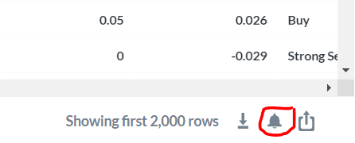
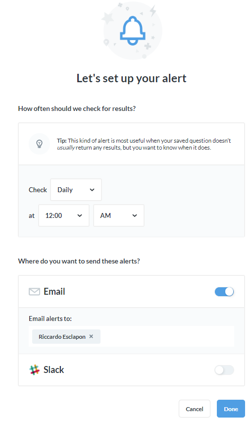

6 Additional Tips
This section goes over some additional tips around using Metabase.
6.2 E-mail Alerts
The Metabase environment is setup to allow for e-mail alerts, where you can e-mail out results on a schedule.
6.2.1 Existing e-mail alerts
I have used this feature of the Metabase environment to setup alerts to ensure the data is flowing in as expected into the database.
Every hour a set of quick queries runs to check if any of the data is more outdated than it should be. For tables where the data flows in every hour, it checks that the latest data is not older than one hour. If the latest data is older than one hour, I get an e-mail letting me know for each table individually.
At the start of every hour, there is an alert that checks for queries that have been running longer than 20 minutes and e-mails me the SQL statements to kill those queries.
6.2.2 Creating e-mail alerts
When creating a table or chart in Metabase, you will have the option in the bottom right of the page to create an e-mail alert by clicking on the button shaped like a bell:

From here the menu to setup the e-mail alerts should be very straightforward:

For more thorough instructions around creating e-mail triggers, review the official Metabase documentation: https://www.metabase.com/docs/latest/users-guide/15-alerts.html
6.2.3 Pulses
- Pulses are almost exactly like e-mail alerts, see the official Metabase documentation for details around using pulses: https://www.metabase.com/docs/latest/users-guide/10-pulses
6.3 Creating Variables for queries
Within a new question, click on the “x” symbol to open sidebar on the side and learn how to use variables:
- {{variable_name}} creates a variable in this SQL template called “variable_name”. Variables can be given types in the side panel, which changes their behavior. All variable types other than “Field Filter” will automatically cause a filter widget to be placed on this question; with Field Filters, this is optional. When this filter widget is filled in, that value replaces the variable in the SQL template.

6.4 Using the Shrimpy-Python Library
This section is a bit more expert level and I don’t really expect anyone to go down this route, but I figured it was worth having a small section on using the Shrimpy software for trading cryptocurrencies by using their Python package. This is a particularly good way to execute trades on the cryptocurrency markets because rather than having to connect to and manage each API individually, you can connect up to 16 exchanges to your Shrimpy account and programmatically trade on every one of them using the same set of functions in Python.
- First you would have to import the
shrimpy-pythonlibrary. For installation instructions see this link
## Warning in connection_release(conn@ptr): There is a result object still in use.
## The connection will be automatically released when it is closed